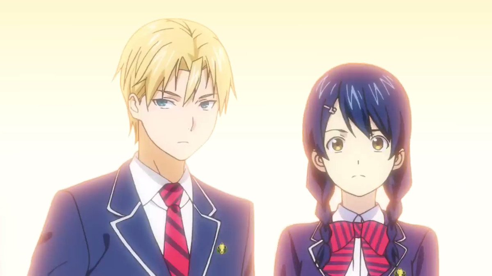
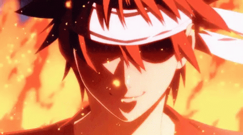

10 Dewan elite yang baru kini telah lahir.
Seiring berjalannya waktu, posisi dari 10 dewan elite mengalami perubahan. Apalagi perubahan tersebut datang sejak Nakiri Azami melakukan kudeta dengan memanfaatkan 10 dewan elite. Oleh karena itu pemegang kursi peringkat 8,7, 5, dan juga 10 memutuskan untuk keluar dari 10 dewan elite.
Kudeta yang dilakukan Azami itu pun membuat Souma dan teman-temannya harus melawan anggota 10 dewan elite yang terbaru maupun yang masih tersisa dalam sebuah Shokugeki agar Souma dan teman-teman yang menentang Azami tidak dikeluarkan. Pertarungan yang panjang tersebut pun membuat para anggota 10 dewan elite lama turun dari tahtanya.
Beberapa Dewan elit yang menarik perhatian tentu saja yang menempati kursi ke 10 tadokoro megumi dari awal seri berjalan memang sudah kelihatan kemampuannya, hanya saja kekurangannya yaitu kurangnya kepercayaan diri yang membuatnya mudah gugup. Tapi sekarang dia sudah menjadi Elite Ten yang menduduki kursi ke-10 dan menggunakan haknya untuk keliling dunia dan mempelajari budaya.
Lalu ada Takumi Alidini pemegang kursi ke-10, Lelaki dari Italia ini merupakan koki yang hebat dari awal seri ini berjalan, hanya saja dia memiliki sifat kekanakan, tetapi setelah masa magang/stagiere ini dia menjadi lebih dewasa.
Dan pemegang tahta nomor satu di elite ten council siapa lagi kalau bukan dia? Tokoh utama dalam seri ini selalu saja membuat masalah, dari mulai upacara pembukaan, menantang alumni untuk Shokugeki, Dan sekarang memimpin pemberontakan. Karena dia pemimpin dan bisa mencapai bagian akhir dalam Shokugeki Regiment.